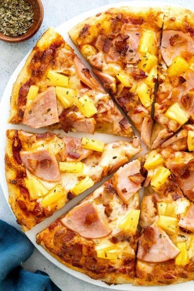
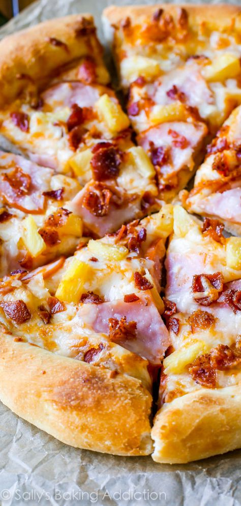
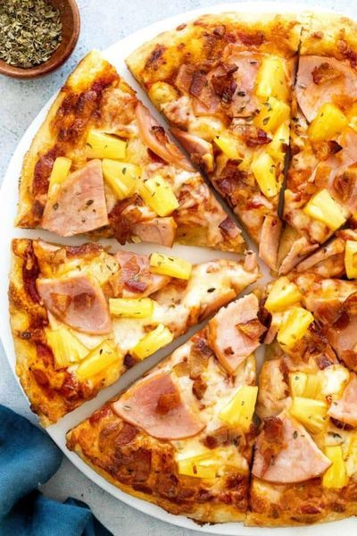
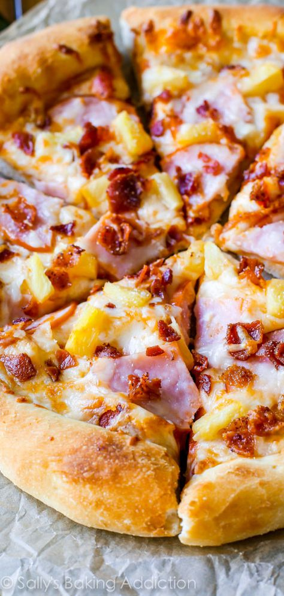

 

Hi! I am John Robert M. Torres, but everybody calls me JR. I am from Bay, Laguna. I am a Batch 2018 student taking up BS Statistics in UPLB.
My favorite CMSC subjects are CMSC 12 and CMSC 21 because the Python and C languages were not very hard for me to learn (compared to Java where I really STRUGGGLED). Also, I do not have a favorite GE subject because I hate all of them the same.
HAWAIIAN PIZZA IS THE ONLY CORRECT ANSWER!
 
My hobbies include listening to music (mostly Korean songs) and watching Mobile Legends streams in YouTube. Sometimes, I read some books, but I easily get bored by reading unless the material is very interesting.
I do not remember what I want when I was a child, but I guess one of them is to be a superhero. Looking back at it, it is somehow lame because my concept of superheroes revolves around people with supernatural powers. Additionally, I think I want to be a superhero back then because I hate policemen (they were always late at the crime scene).